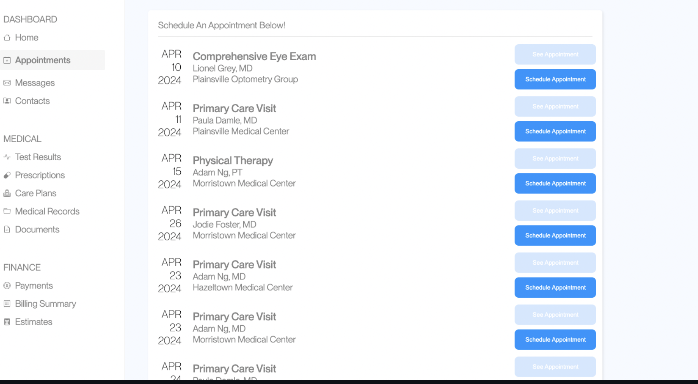

Overview
In this A/B testing project, we aim to understand the underlying statistics of A/B tests on websites. For this assignment, we have made a minor change to a static HTML website and tested how this small change affects user interactions. A/B testing allows us to perform quantitative analysis on user behavior and understand the impact of design changes. Our goal is to measure how this change influences users performing a specific task: scheduling an appointment with Adam Ng, MD at Morristown Medical Center on April 23, 2024.
Changes Made
I changed the 'schedule appointment' buttons to light blue to make them easier to see and make the interaction more clear. I also changed the title of the table to "Schedule an Appointment Below" so users are more clear on what they have to do. Below is a screenshot of the modified webpage:
Metrics and Hypotheses
1. Chosen Metric: Mouse Movement Distance (pixels)
Null Hypothesis:
The mouse movement distance in version A will be the same as the mouse movement distance in version B.
Alternative Hypothesis:
The mouse movement distance in version B will be different than the mouse movement distance in version A.
Reasoning:
Lower mouse movement distance may indicate improved user experience, suggesting that the design change has made it easier for users to navigate the website. The alternative hypothesis implies that Version B's design leads to a more efficient user experience. Since our original alpha is 0.05, the low p-value indicates that the observed difference in mouse movement distance between the versions is statistically significant.I predict that the design changes in version B will lead to a significant reduction in mouse movement distance compared to version A, indicating a more efficient user experience.
2. Misclick Rate
Null Hypothesis:
The misclick rate in version A will be the same as the misclick rate in version B.
Alternative Hypothesis:
The misclick rate in version B will be different than the misclick rate in Version A.
Reasoning:
Since the color of ‘schedule appointment’ is now highlighted, I think it will be easier for users to find the correct button to press to schedule the appointment. Therefore, the misclick rate will differ. A lower misclick rate suggests that users are interacting more accurately with the website, indicating an improvement in usability. The alternative hypothesis suggests that the design changes have positively influenced user interaction. Since our original alpha is 0.05, the low p-value suggests that the difference in misclick rates between the versions is statistically significant. I anticipate that the highlighted 'schedule appointment' button in version B will lead to a decreased misclick rate compared to version A, reflecting improved user interaction and usability, supported by the statistically significant difference indicated by the low p-value.
3. Time on Page (milliseconds)
Null Hypothesis:
The time on page in version A will be the same as the time on page in version B.
Alternative Hypothesis:
The time on page in version B will be less than the time on page in version A.
Reasoning:
Since the title has changed to be clearer, a user will understand that the primary screen they’re on is to schedule an appointment. Therefore, it should be quicker to schedule an appointment. A lower time on page indicates that users are spending less time to complete the task, suggesting improved usability and clarity of design. The alternative hypothesis implies that Version B's design leads to quicker task completion. Since our original alpha is 0.05, the low p-value indicates that the observed difference in time on page between the versions is statistically significant.I expect that the clearer title in version B will result in a reduction in time on page compared to version A, indicating faster task completion and improved usability, supported by the statistically significant difference highlighted by the low p-value.
Statistical Analysis
Misclick Rate
Test Used: Chi-Squared Test
Chi-Squared Value: 6.428571429
p-Value: 0.01
The high chi-squared value indicates a significant deviation in misclicks between the two versions. Since the p-value is less than our alpha level of 0.05, we find statistically significant evidence to reject the null hypothesis. Therefore, we are confident that the alternative hypothesis is true, indicating that the misclick rates are different between versions A and B.
Time on Page
Test Used: One-tailed t-test
Means: Version A: 38216.95 ms, Version B: 9046.29 ms
p-Value: 0.000000001
The extremely low p-value indicates a statistically significant difference in time on page between the two versions. Since the p-value is much less than our alpha level of 0.05, we reject the null hypothesis and find statistically significant evidence that Version B has a lower time on page than Version A. We are confident that the alternative hypothesis is true.
Mouse Movement Distance
Test Used: Two-tailed t-test
Means: Version A: 8975.16572 pixels, Version B: 2796.220981 pixels
p-Value: 0.0001
The high t-score and low p-value indicate a significant difference in mouse movement distance between the versions. Given that the p-value is less than our alpha level of 0.05, we reject the null hypothesis and find statistically significant evidence that the mouse movement distances are different between versions A and B. We are confident that the alternative hypothesis is true.
Summary Statistics
- Time on Page (ms) for Version A
- Mean: 38216.95
- Median: 36748.5
- Variance: 10618784.73
- Time on Page (ms) for Version B
- Mean: 9046.29
- Median: 9500
- Variance: 13750412.34
- Mouse Movement Distance (pixels) for Version A
- Mean: 8975.16572
- Median: 9100
- Variance: 13368207.01
- Mouse Movement Distance (pixels) for Version B
- Mean: 2796.220981
- Median: 3000
- Variance: 203049.125
Conclusion
The changes made to the website were successful in improving the user experience. The misclick rate, time on page, and mouse movement distance were all significantly different between the two versions, with the new version showing improvements across these metrics. This project demonstrates the powerful nature of statistical tests in measuring the impact of design changes on user behavior.